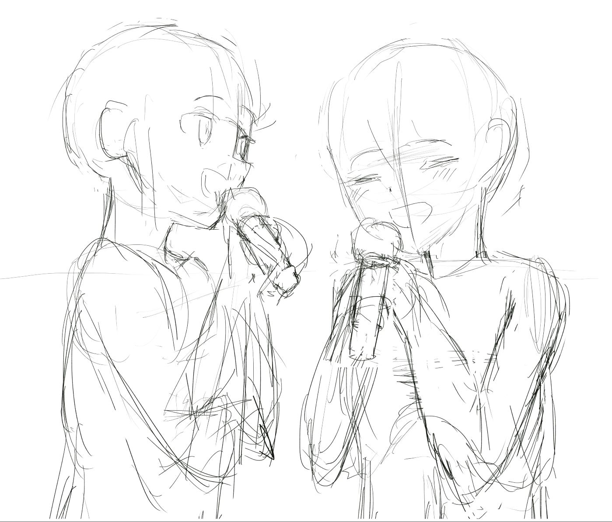
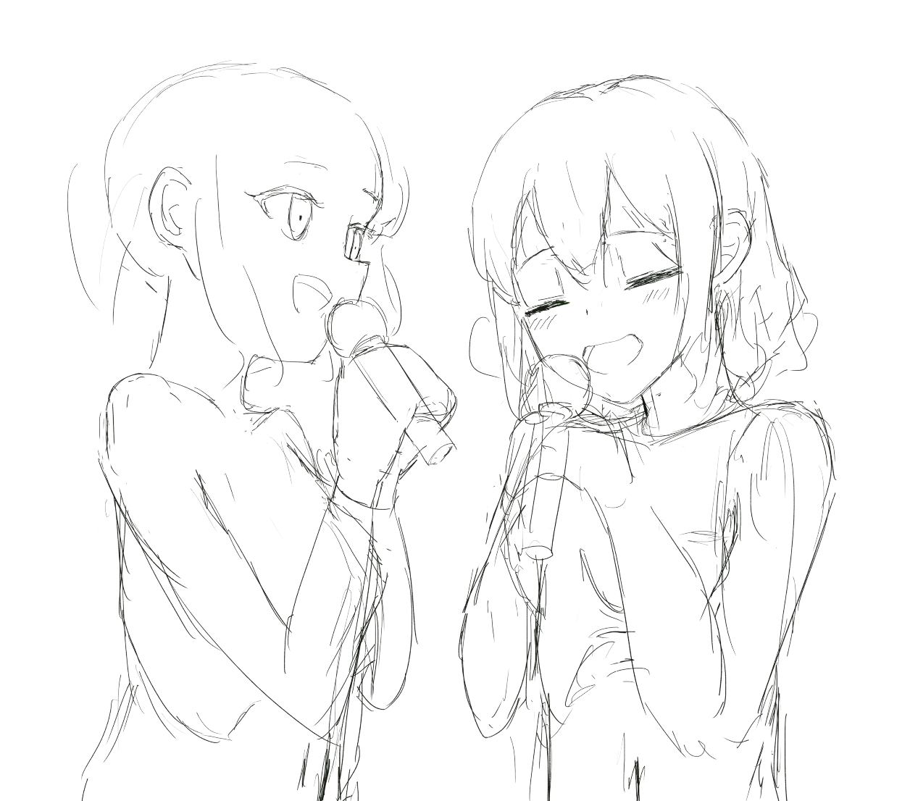
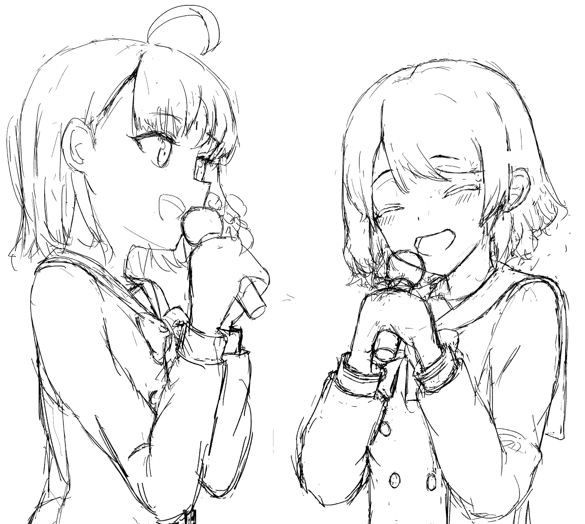
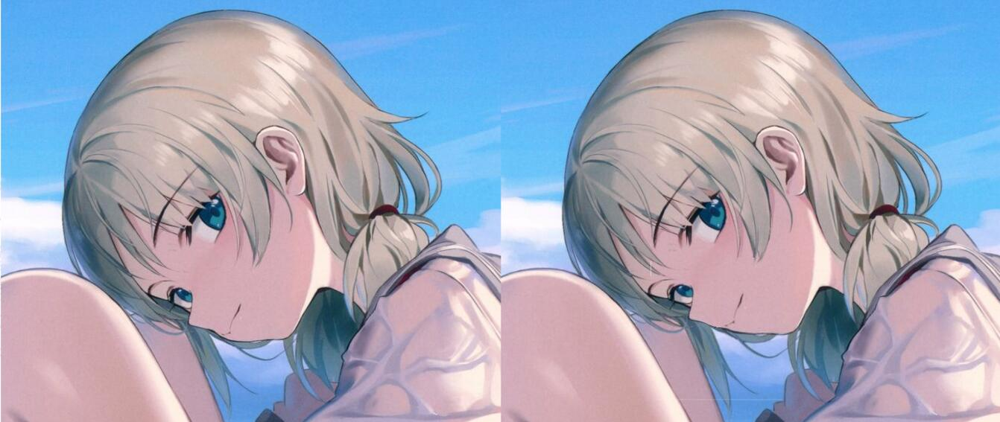
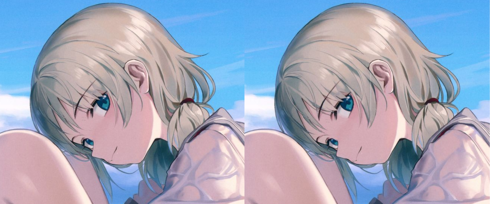
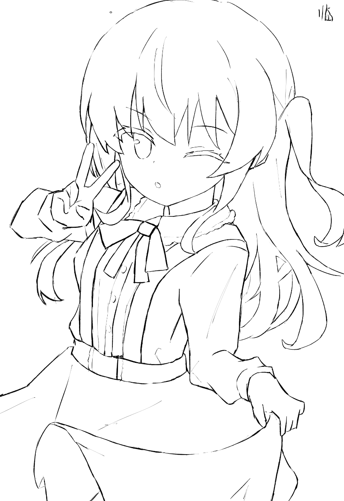
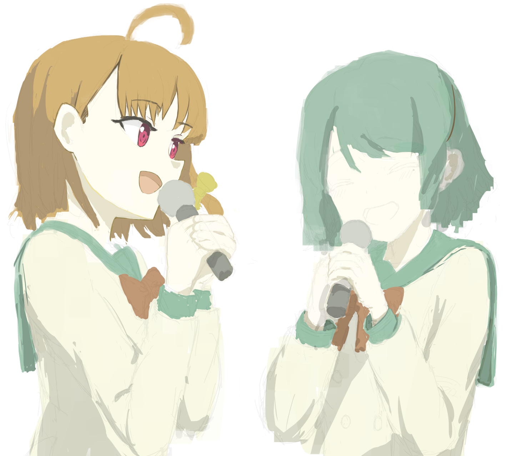

千曜对唱项目 α 记录
说是项目 alpha，因为这个项目后面我还会再回来的。
两人手持麦克风，深情唱歌状对视。画到草图，或者以博老师的画风去画线稿、上色（结果没有）。
我想要把这幅画画完！这就是我对这三天最殷切的期望。
我决定，首先画草图，画完草图，再去具体找设定集再细化！
草图
草图……目前我先就只画一张吧？

但这张已经暴露出问题来了：
- 我不知道怎么让两个人真正处在同一空间中（做交叠？），如果不画眼睛，目光的话，还真难去表现。
- 眼睛的结构，我之前画的大头练习都是看镜头的，不看镜头的时候瞳孔位置我有点不确定
- 我不熟悉头和脖子、脖子和肩膀的连接关系，我今天早上的时候才去 HBR 对着 3D 模型看了一下脖子，认识到脖子是前伸的，但还有很大进步空间
- 我希望画出稍微弓腰的感觉，表明唱的很用力，但很难画 hh
- 我不明确手臂和胸腔的位置关系，手臂的大小，这个角度手肘的高度和位置，我改了好几次，我记得弯举时，手肘高度应该是到肚脐（不过很多二次元画师都无法正确处理手肘高度）
- 手，手，手！手是公认的难点，对我当然也不例外，手和麦克风的关系是怎样的，完全没有头猪。
继续继续！

我……我到此为止了，这个构图就这样吧，然后找设定集，决定参考 https://exhentai.org/g/1614144/a15592590c，这个同人本的千曜画得特别可爱。
我注意到一种不好的倾向——我刚画了其中一个角色的草图，就去反复研究，为什么我画的不可爱？然后反复尝试修改。我觉得我这有点超过了，另一个角色我还没画（就是说我连这个阶段都没完成呢），而且后面还有线稿、上色阶段呢，要表现出角色的神态和可爱感，并非仅是这阶段的任务。这就像，就像厨师刚剁完菜，就尝了一口抱怨“这菜没味儿”（GPT 这个比喻绝了 TMD）。
这实际上是因为（仍旧是 GPT 告诉我的），我试图用局部去打动自己，以便获取信心继续推进。
解决方案是，我应当明确每个阶段的评价标准，同时，关于可爱感，我应当另行建立项目去进行研究，而非总是临时面对它的时候才觉得焦虑。
see？如果没有创作，我不可能发现这个问题。
然后，千歌和曜，都是相对复杂的短发，它们的立体感我都不会处理……我现在才意识到，我选择布丁作为大头的绘制对象，是选择了个最简单的——她的发型极其简单且风格明显，很容易画出来感觉，但千歌和曜都是相对写实的头发，我得专门去研究怎么画才行。
舒适区，学习区，恐慌区。如果说现在大头是我的学习区的话，人体的衣服（衣褶）对我来说就是恐慌区了，画它对我来说得不到正反馈，难以解决。但恐慌区是必然会面临的——我要完成创作的全部过程的话，其中必定有许多部分是我没有训练、学习、研究过的。
see？这创作的过程，其实也是暴露自己在绘画、以及在内心上的问题的过程，两者都是需要调整的。
我应当做的是，对于处在恐慌区的部分，我要允许自己画的烂，但同时我要找到我最恐惧的部分，然后后面专门去干它。先做出来（即使是小孩子涂鸦），再做好。
然后，处理完了衣褶……千歌这个角度我真不知道咋画，手臂把胸部全挡住了，不知道怎么暗示胸部的体积。

然后，是这张图的最难关了——手……这还不止是普通的手，是双手交叠握住话筒，这我必须得找参考了。
但我想想不对，握住话筒好像不会这样双手交叠，而是一只手覆在另一只手上面，这就相对好画一些，是抱拳的感觉。
最小交付物完成……而我觉得我有必要继续下去，线稿阶段一定能够看到更多问题的——我的头发，衣褶，手，可以说均有糊弄的成分，线稿会把它们都暴露出来，把草稿粗糙的线条所掩盖的东西全部都暴露出来。
线稿
我在绘制线稿之前又逃避了，本来第二天还有充足时间去画线稿的……
考虑到现在每天的投入到画画上的精力还是不够多的，我应当定更多任务。
第三天。他妈的，你清醒点——头发，主要是复杂的后发，是你毫无把握的东西，画线稿正好是暴露的机会。从这时候起，既然后面全都是恐慌区了，那就转变心态，以轻松的心态去画下去，把目标改变为暴露自己在结构、线条、上色上的问题，而非切实地完成这幅作品。实际上传作品时，我要把当前的草稿、线稿、成品均上传，因为它们都是有意义的。
早上发现了一只幽灵蛛在地上，结果上午跑去打扫卫生了，下午四点才开始画画……
用博老师的画风的话有个问题……那根本没得色上——两人均是浅色头发，校服也是浅色，唯有衣领颜色稍微深……这什么跟什么啊。
按照博老师的画风，他是不会去明确画明暗的，所以头发的暗部我也没法用暗色。
唉，黑白插画我认为是有必要去学习的，我将来是要画漫画的，为了绘制快速，表现直接。这方面的话，伊月 kuro 老师的风格我很喜欢。
这里做了个额外的研究，记一下，想参考幻想黑兔老师的画风，于是翻他的画集（书我买了！），看到一张曜的脸感觉结构有点奇怪，就修改了一下：

这是把整个脸的轮廓包含右眼均往里收了一下，但把原图的可爱感搞没了——嘴唇处有点婴儿肥的感觉的，我不小心液化给它抹掉了。再说这前后其实也没啥差别……
然后再次修改，这次修改左眼，修改了一下两只眼睛的对称：

这种也可以当作日常的一种练习了，看到感觉不对劲的图，尝试用液化给它修改一下做对比。但必须隔天重新审视一下，不然怕自己陷入视觉疲劳中。
就我当前的状况来说，我感觉线稿的乐趣在于闭塞阴影（虽然这个可能会把后面的上色阶段给坑到？）
线稿，线稿，很矛盾嚯，我其实是期待在将来去画厚涂画风的，这样的话线稿的重要性其实不大（成图中甚至不会保留线稿），但我同样也喜欢漂亮流畅，变化多样的线条。但我不可能只专精厚涂——我还要画漫画呢！那线稿就变成同样重要的东西了。
但在线稿阶段，我就得考虑上色的部分了。这张画的主题是非常轻松悠闲的，因此不适合高曝光的风格，所以闭塞阴影的话我强调可以，但不能过了头。（不过过了头也没事，线稿可以在后续调整颜色，只要改成当时的阴影的颜色即可）
同样考虑到这幅画的主题，我决定以 はえもり 老师的上色风格为参照，他的风格清新我很喜欢。
但这思考方式是不是有点问题？我咋是以题材去决定风格呢？没见到其他艺术家这么干的。还是说现在我没有自己的风格的时候确实应当如此？
但我可能也不能直接和其他艺术家去做比较……因为我不能只有一种风格，轻松的，严肃的，尖锐的，我都得掌握，因为我不是完全地出于我的兴趣去画画的。
所以今天的临摹启动就以はえもり老师的一幅画去开始，但这次就不止是拷贝形状了，上色也得看看。这也得算到这个项目里头！

上次画线稿是一年前了吧……现在画线稿的话，仍旧感觉跟喝醉了似的脑袋雾蒙蒙，但也会思考线条对应的空间，线条应当是粗还是细，但目前没总结出系统的方法论，画出来的东西仍旧是凌乱的。
但，我对自己重申——漂亮流畅的线稿我应当把它放得更长期，我当前不要追求它，线稿毛糙就毛糙，只要能清晰看出结构（这是线稿对当前阶段的我的意义），能服务于上色，我就认为它是合格的。但，线条可以毛糙，线条背后的结构必须清晰，即始终要带着空间思维去画和看线稿。（当然，我也承认有时候相应的结构是超纲的，我确实对它认识不清晰，但这是当前的局限性导致的）
就是说，（当前）更多是把线稿当作工具，过渡形式，而非是独立的艺术形式。
但应该是有取巧的方法的，让即使毛糙，用短时间画出来的线稿仍旧好看（我可能会始终画这样的，除非是非常平涂的风格强调线条的），但这就是后话了。现阶段这不是重心。
比如一种方式就是，用大小不变的，笔压对应不透明度的笔刷去画线稿，但这方法……对漫画可行不通（虽然漫画也并非是必须要你的线条清晰漂亮）。
然后给这幅上色。上色过程我是：
- 先随便用一种颜色把主角的剪影圈出来
- 把这个图层作为剪切蒙版，然后涂各部分颜色（在同一个图层中）
- ……
呃……这幅临摹的上色 pass。我有点绷不住。我承认，线稿和上色这俩确实对我是很大的恐慌区，我整个人都麻了。上色这个过程，就非常地……怎么说，流程性？
总之，我还想着能更自由一些呢，我最喜欢的那种，是画了草图后直接上色+线稿同时进行，线稿更多是作为辅助、强调边缘、闭塞阴影来的。
这幅，我就自由一些吧……就按这里说的做。但这……真的是一条荆棘之路，做任何事情我都没有任何底儿（而且甚至没有范本）。上色，我需要熟二分，熟素描，熟色彩，但这些我其实都不熟（硬要说的话素描曾经练过，但早全忘光了，而且板绘上没怎么画过）。总之，调整心态，后面分析过程的时候就看看录像。
又想着在这一阶段去画灰阶，再后面再上色，但这一幅并没有那么多明暗要拉，所以直接上色得了。
下一幅以及近期的图，就别 tm 上色了。当前这个不是学习方向。下一个创作项目，就一个四格漫画吧。
呃……然后这么操作，实验成这样，我渐渐画不下去了，但……我还是得画下去，根据 GPT 的建议，首先把整体的明暗搭起来，然后马上去细化千歌的头部以作为下一阶段的起始点（我之前是想着整体一起细化的，但这可能不是一个合适的方式）

我要再次再次再次给自己强调一下，我就是菜，现在干的事情我都完全没有经验，因此毫无头绪，emo，想要放弃，都是正常的。我要尝试去把这些心态看作他者，尽力去拒绝被它们所影响。
好吧，我决心还是这样停下，这种方法对我来说有点太过了，我应当先掌握那种逐阶段的方法，从草图到线稿到上色，这样一步到位需要我对将要达到的结果胸有成竹，但我完全无此能力。
我决定，在下一个带上色的完整作品的创作型项目之前，我要去找一个画师作为模板，研究他的上色流程（得一板一眼，不那么随意发挥的那种），去按全流程完整临摹一幅他的画。
但这一幅我不能割舍，我要在后面的一个星期里继续完成它，但不影响其他项目的执行。这整幅画，我在后面研究了线稿和上色后可能回来做一个 before-after 呢。
复盘
结果其实也没什么复盘的。上面提出了一大堆问题。我当前主要关心结构上的问题：
- 头发
- 眼睛的结构，目光方向
- 衣服和衣褶（当然，前提是人体）
- 手
但这不会改变我后面的几个项目：关于透视中的立方体和圆的研究，关于人体比例、体块的研究，然后是另一个创作型项目——绘制一个人物的两个全身立绘（弱透视的，接近平行投影），泳装的和着衣的，包含正面、正侧面和半侧面（当然，最小交付物将会是泳装的正面和正侧面，因为着衣的版本仍旧是会超纲的，斜侧面作为立绘是很少出现的），而立绘里也是要画线稿和上色的。
本博客所有文章除特别声明外，均采用 CC BY-NC-SA 4.0 协议 ，转载请注明出处！